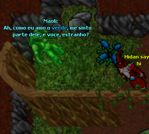
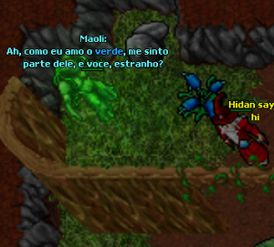

Boa tarde pessoal, hoje lançamos o mais novo monstro do Hellblazer, o Infernalist, seus aposentos estão localizados em Teran e contam com 3 andares que só podem ser acessados por jogadores com nível maior a 270.
Tivemos muitas caves e monstros novos desde o lançamento do OT, mas a maioria foi voltado para paladins e knights, agora com o Infernalist esperamos agradar os mages.
Ao longo da semana anunciaremos mais alguns projetos para o jogo no fórum, um abraço a todos e bom jogo.

 

Boa noite galera, demos início hoje ao novo sistema de magias do jogo. As invocações são basicamente um utevo res mais forte, em que o jogador deve ter um contrato com a criatura para invocá-la.
A primeira invocação do servidor será Maoli, o mais poderoso guerreiro dos Hardpans. Somente druidas com um nível superior a 280 podem invocá-lo. Em breve mais invocações serão lançadas no jogo!
A criatura Maoli é encontrada na entrada dos
Hardpans e é responsavel pela primeira magia desse novo sistema implantado no servidor,
Magia feita para os Druidas quando dizem: "Kuchiyose Maoli"
é encontrada na entrada dos
Hardpans e é responsavel pela primeira magia desse novo sistema implantado no servidor,
Magia feita para os Druidas quando dizem: "Kuchiyose Maoli"
Boa noite pessoal, como prometido no fórum hoje lançamos a mais nova quest do Hellblazer que tem como prêmio a Glacier Shoes : (Arm:2, protection ice +5%, speed +50).
Os sapatos podem ser usados somente por mages level 250 +.
O jogador deve descobrir um jeito de adentrar o santuário dos quatro magos chakoyas e roubar o seu poder!
Espero que todos gostem e desejo boa sorte ao fazê-la!